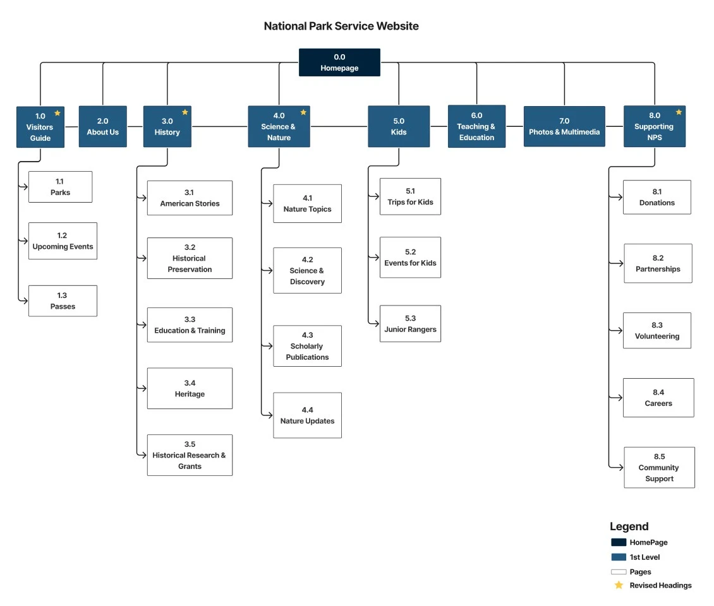
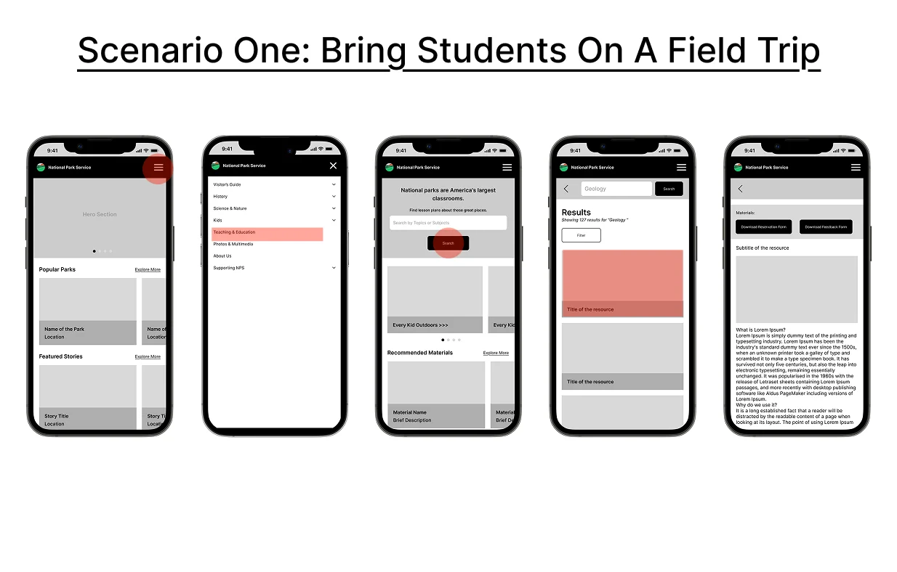
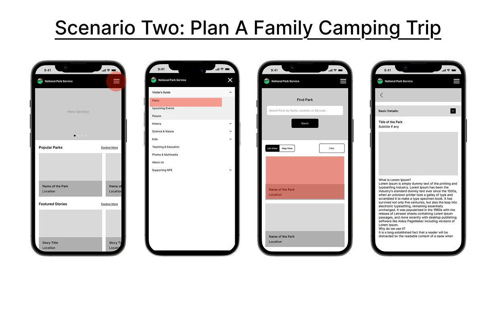
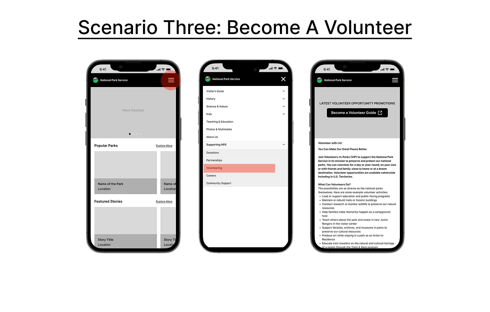
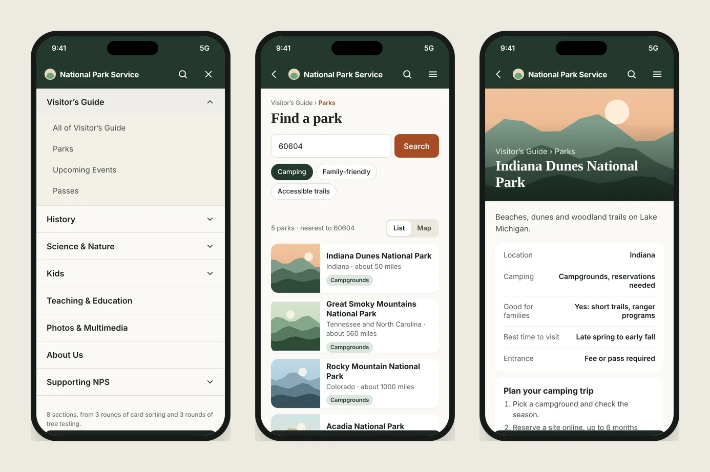
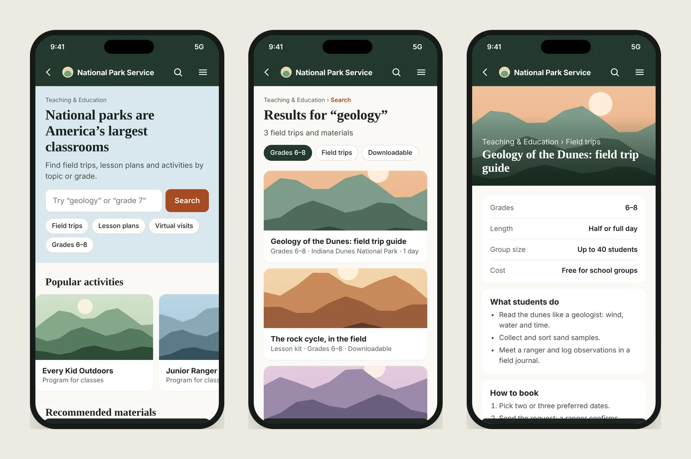
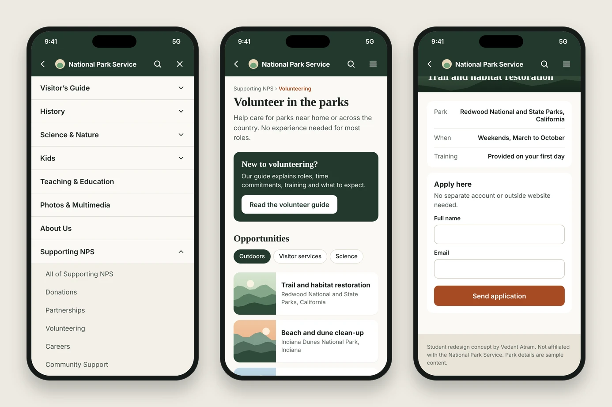

The brief: a site that grew in every direction
nps.gov serves families planning trips, teachers, researchers, volunteers and job seekers. Over the years its structure grew to match its organisation, not its visitors. Our audit found four recurring problems:
- Navigation changes from one park’s pages to the next.
- Categories overlap, like “Things to Do” and “Plan Your Visit”.
- Key actions, like reservations and accessibility services, are hidden or mislabelled.
- Search results and category labels are unclear, especially for first-time visitors and non-native speakers.
We wrote three scenarios to keep the work grounded in real goals: Jamie planning a family camping trip, Ashley bringing her students on a field trip, and Oliver trying to volunteer. In the current site, Oliver chooses “contact a park”, is sent to a different website, and gives up.
Make core information and actions easier to find, cut redundancy from the hierarchy, and help people finish tasks like signing up to volunteer.
People can sort the content into our groups with high agreement, and then find the right place for real tasks in a tree test.
Starting with what’s there
Between 26 April and 13 June we moved from a content inventory and a task-based heuristic analysis, through card sorting and tree testing, to a sitemap and wireframes. The inventory tracked what each page was, where it lived, and whether it should be kept, revised, written or redirected.
| What the audit found | Why it matters |
|---|---|
| Navigation is hidden and hard to use | People can’t build a picture of what the site offers. |
| Labels are unclear and inconsistent | The same thing has different names in different places. |
| Content structure is inconsistent | Each park section is organised differently. |
| Critical content is buried | Reservations, passes and volunteering sit several levels deep. |
Card sorting: from 9 groups to 5
We proposed a new structure from the audit, then tested it with closed card sorts on Proven by Users. Each round, participants placed about 20 cards into our categories, and we changed labels and groups based on where they agreed and where they hesitated.
| Round | What we saw | What we changed |
|---|---|---|
| Pilot 5 people · 9 groups · 20 cards | Parks, Events and Passes grouped together. “American Stories” and “Preservation” were confused. | “Visiting the Parks” became “Visitor’s Guide”. Preservation became “Historical Preservation”. “Science & Research” became “Science & Discovery”. |
| Round 1 5 people · 9 groups · 19 cards | Heritage Sites sorted cleanly. Education & Training reached 100% agreement. Scholarly Publications still scattered. | Cut from 9 groups to 6, removing About Us, Educators and Photos & Multimedia. |
| Round 2 5 people · 19 cards | Most cards reached 80–100% agreement. Two outliers: Education & Training spread across 5 groups, and 60% of people put Scholarly Publications in “I don’t know”. | We stopped here, with 5 groups: Visitor’s Guide, History, Science & Nature, Kids, and Supporting NPS. |
Tree testing: where the structure met real tasks
Card sorts show whether labels make sense. Tree tests show whether people can use them to reach a goal. We gave participants the three scenario tasks and a text-only menu, and measured how many ended in the right place.
| Task | Pilot 10 people | Round 1 9 people | Round 2 10 people |
|---|---|---|---|
| Field trip A middle school teacher looks for field trip information | 90% | 22.2% | 40% |
| Camping trip A family looks for a national park to camp in | 60% | 44.4% | 80% |
| Volunteering An environmental enthusiast signs up to volunteer at Redwood | 90% | 66.7% | 50% |
Success rate: the share of participants who chose the correct destination. Participants came from a university participant pool.
After the pilot
The same test, much worse results
The pilot went well, so we ran round 1 with the same tasks and menu. Success fell, to 22% for field trips. With small, different groups, the pilot had flattered us.
We rewrote tasks that leaked the answer or misled: “geology” sent people to Science & Nature, and “family” to Kids. “Educators” became “Teaching & Education”.
After round 2
One clear win, two open problems
Camping rose to 80%. Field trips reached 40%, with answers split between Visitor’s Guide, Science & Nature and Kids. Volunteering fell to 50%: people looked in Visitor’s Guide, not Supporting NPS.
People understood our labels but couldn’t use them to reach a goal. We believe that’s partly content strategy and partly our guesses about NPS users’ goals, made without time for user or stakeholder interviews.
The sitemap
Ramya drew the final sitemap from three rounds of card sorting and tree testing. It keeps the five tested groups and brings back three top-level sections the card sort had removed, including Teaching & Education, which round 1 of the tree test showed teachers needed. Four headings were renamed along the way.

Eight sections, with four revised headings marked by stars.
- Visitor’s Guide puts Parks, Upcoming Events and Passes together, as participants grouped them.
- “Volunteer” became “Volunteering”, because a menu item should describe a place, not a command.
My wireframes: three journeys, mobile first
I designed the wireframes in Figma to check that the sitemap worked as an interface. Starting with mobile forced us to keep only what each step needed. I also used our heuristic analysis of the current site to avoid repeating its problems.

Field trip: menu, Teaching & Education, search, resource.
- Teaching & Education opens with a search, because teachers start from a topic or grade.

Camping: Visitor’s Guide, Parks, then a park.
- Find Park searches by name, location or zip code, with list and map views.

Volunteering: Supporting NPS, then Volunteering.
- Opportunities lead the page, with a guide for first-timers.
From wireframes to a working prototype
In 2026 I built the wireframes into a coded mobile prototype with the full menu from the sitemap, and made a few changes in response to what the tree tests had shown. It’s a student concept, not affiliated with the National Park Service, and uses sample park content.
Camping · 80% in round 2
Parks, one tap from home
The home page leads with a park search, so families don’t need the menu at all. In Parks, a zip code sorts results by distance, and filters cover camping, families and accessible trails.

Menu, search with filters, park page.
- Park pages answer the family questions first: camping, suitability for kids, best time to visit.
Field trip · 40% in round 2
A section that speaks to teachers
Answers split across three sections, so Teaching & Education gets its own top-level entry and a search for topics and grades. Results show the grade and format up front.

Teaching & Education, results, field trip.
- Each trip says who it’s for, how long it takes and how to book.
Volunteering · 50% in round 2
Apply without leaving
People expected volunteering near visiting, and our scenario user gave up when sent to another website. The prototype keeps Volunteering under Supporting NPS, as tested, adds it to the home page’s “Plan, teach or help” links, and lets people apply on the page.

Menu, opportunities, apply.
- The application form sits on the opportunity page itself.
The prototype also includes the tree test tasks beside the phone, with each round’s results, so reviewers can try the same journeys participants did.
Reflection
The biggest lesson: agreement in a card sort doesn’t mean people can complete tasks. If I ran this again, I would interview NPS users and stakeholders before proposing a structure, and test with the people the site actually serves.
- Our participants came from a university pool, not NPS’s audiences of families, teachers and volunteers.
- Rounds were small, 5 to 10 people, and different people took each round, so changes between rounds are directional.
- Some scenarios didn’t translate cleanly into tree test tasks, and their wording swayed answers.
- NPS updated its own website during the project.
- The prototype hasn’t been usability tested. Next I’d run moderated tree tests to learn why people choose what they choose, then test the prototype with real park visitors, teachers and volunteers.